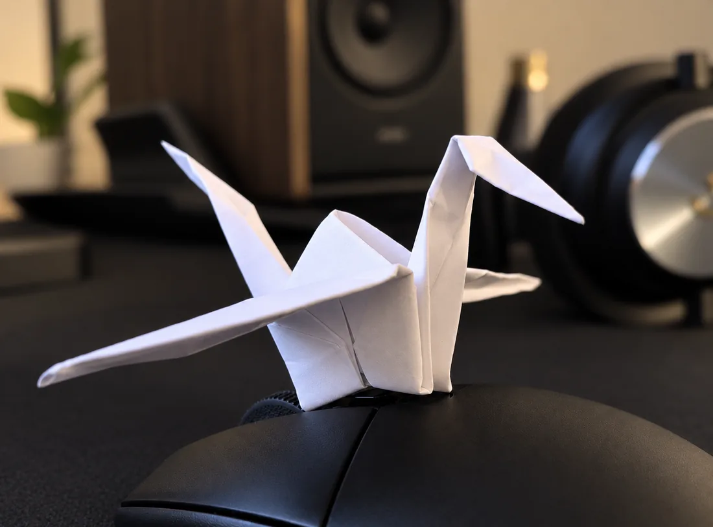

<!-- About Me Section: life outside work -->
<section id="me" class="content-section">
    <h2 class="section-header" data-i18n="me.title">About me</h2>
    <p class="section-subtitle" data-i18n="me.subtitle"></p>

    <div class="me-intro">
        <figure class="me-intro-media">
            
        </figure>
        <div class="me-intro-text">
            <blockquote class="me-quote">
                <p data-i18n="me.quote"></p>
                <cite>Bisz</cite>
            </blockquote>
            <p data-i18n="me.intro.p1"></p>
            <p data-i18n="me.intro.p2"></p>
            <p data-i18n="me.intro.p3"></p>
        </div>
    </div>

    <!-- 01: space — the cursor is a black hole that lenses the star field -->
    <article class="me-segment me-space" data-cursor="hole">
        <canvas class="me-stars" aria-hidden="true"></canvas>
        <div class="me-segment-body">
            <span class="me-segment-label" data-i18n="me.space.label"></span>
            <h3 class="me-segment-title" data-i18n="me.space.title"></h3>
            <p data-i18n="me.space.p1"></p>
            <p data-i18n="me.space.p2"></p>
            <ul class="me-works">
                <li><span data-i18n="me.space.w1"></span><small>Stephen Hawking</small></li>
                <li><span data-i18n="me.space.w2"></span><small>Christopher Nolan</small></li>
                <li><span data-i18n="me.space.w3"></span><small>Kip Thorne</small></li>
            </ul>
        </div>
        <span class="me-hint" data-i18n="me.space.hint"></span>
    </article>

    <!-- 02: philosophy — the cursor is a book that turns pages with the direction of movement -->
    <article class="me-segment me-philosophy" data-cursor="book">
        <div class="me-segment-body">
            <span class="me-segment-label" data-i18n="me.philosophy.label"></span>
            <h3 class="me-segment-title" data-i18n="me.philosophy.title"></h3>
            <p data-i18n="me.philosophy.p1"></p>
            <p data-i18n="me.philosophy.p2"></p>
        </div>
        <ul class="me-shelf">
            <li>
                <small data-i18n="me.philosophy.k1"></small>
                <span data-i18n="me.philosophy.w1"></span>
                <small data-i18n="me.philosophy.a1"></small>
            </li>
            <li>
                <small data-i18n="me.philosophy.k2"></small>
                <span>Clair Obscur: Expedition 33</span>
                <small>Sandfall Interactive</small>
            </li>
        </ul>
    </article>

    <!-- 03: gravel — the cursor is a bike that rides the way the pointer moves -->
    <article class="me-segment me-gravel" data-cursor="bike">
        <div class="me-segment-body">
            <span class="me-segment-label" data-i18n="me.gravel.label"></span>
            <h3 class="me-segment-title" data-i18n="me.gravel.title"></h3>
            <p data-i18n="me.gravel.p1"></p>
            <p data-i18n="me.gravel.p2"></p>
        </div>
        <figure class="me-gravel-media">
            
        </figure>
    </article>
</section>
